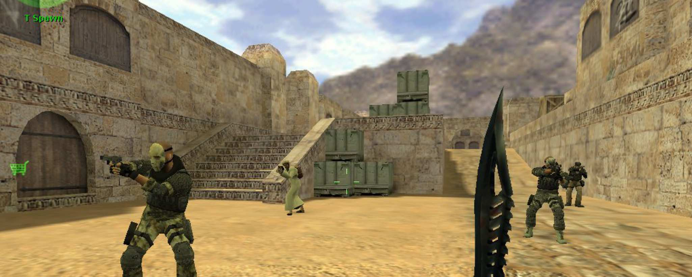
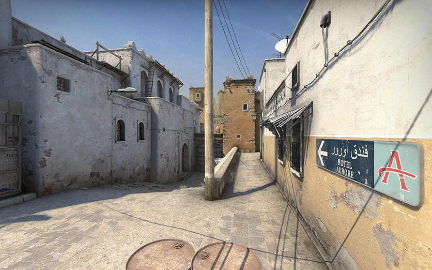

História do CS:GO

O lançamento em 2012 não foi um sucesso absoluto de imediato; muitos jogadores veteranos ainda preferiam as versões 1.6 ou Source. A grande virada ocorreu com a atualização "Arms Deal", que introduziu as pinturas de armas (skins). Isso não apenas mudou a estética do jogo, mas criou um mercado de trocas multibilionário, dando ao CS:GO uma longevidade financeira e uma base de usuários ativa que poucos títulos conseguiram alcançar.

A força do CS:GO reside na sua simplicidade difícil de dominar. Esse equilíbrio perfeito permitiu o surgimento dos Majors, campeonatos mundiais com premiações milionárias. O Brasil teve um papel protagonista nessa história, com a equipe da SK Gaming/Luminosity vencendo dois mundiais seguidos em 2016, elevando nomes como Coldzera ao status de celebridade mundial e consolidando o país como uma das maiores potências da modalidade.
O design de mapas como Dust II, Mirage e Inferno tornou-se o padrão ouro para o level design de jogos competitivos. O jogo se destaca pela economia interna: os jogadores precisam gerenciar o dinheiro ganho em cada round para comprar equipamentos melhores, criando camadas de estratégia que vão muito além de apenas "mirar e atirar". O uso tático de utilitários, como granadas de fumaça e cegantes, define quem vence nos níveis mais altos de habilidade.

Após 11 anos de atualizações constantes, o CS:GO atingiu seu recorde histórico de jogadores simultâneos em 2023, provando que o jogo estava mais vivo do que nunca antes de sua "aposentadoria". Em setembro de 2023, a Valve lançou o Counter-Strike 2, uma atualização gratuita que trouxe a engine Source 2. O CS2 herdou todo o inventário e a história de seu antecessor, mas introduziu fumaças volumétricas dinâmicas e um sistema de sub-tick para tornar a jogabilidade ainda mais precisa.